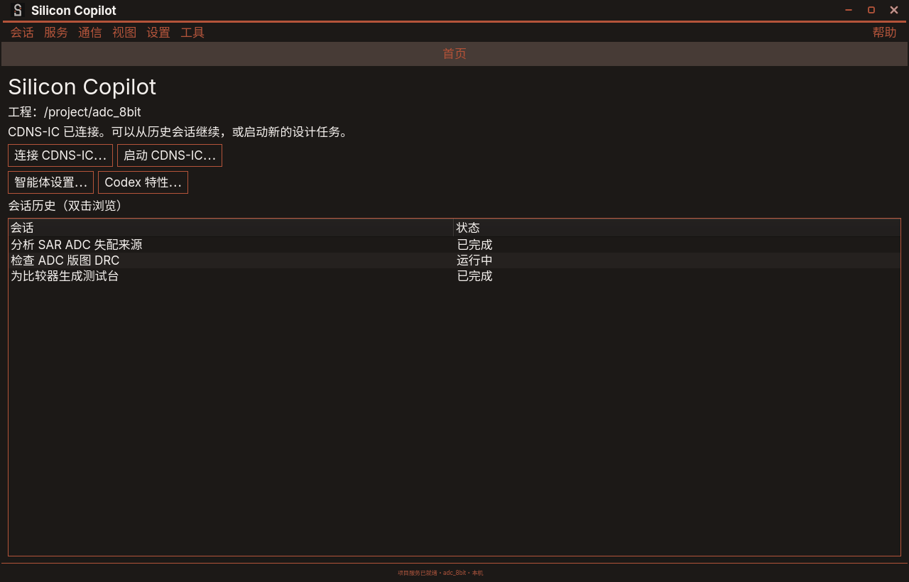

00 / CLIENT INTERFACE
先认清界面，再开始任务。
SiCo 客户端分成“首页”和“会话工作区”两个阶段；DRC、LVS、RCE、MTS 等 CAD flow 则从 Virtuoso 的 SiCo 菜单打开独立表单。本页先说明客户端页面、菜单和按钮，再给出各 flow 的界面入口。

adc_top/adc_8bit/layout，并显示会话、任务、审阅与运行状态。左侧导航、右侧工作台和每个子页面的完整截图见SiCo 工作区页面。点击图片查看原始尺寸首页选择或启动 CDNS-IC、检查项目服务、进入智能体设置，并从会话历史继续。
会话工作区阅读对话、查看任务队列与工作台、审阅工具请求，并在底部输入新任务。
CAD flow 表单从 Virtuoso 的 SiCo 菜单打开，按输入、选项、输出和硬件分区。
独立监控窗口MTS、LSF 和 DSPF Analyzer 使用独立窗口，关闭后不影响已经启动的项目服务。
首页：连接与继续
首页是独立入口，不要求已经建立 AI 会话。顶部显示工程目录，中部给出连接状态与两个 CDNS-IC 入口，下部列出当前工程的会话历史。


| 页面/按钮 | 作用 | 使用要点 |
|---|---|---|
| 工程：路径 | 显示本次启动使用的工程目录。 | 连接 Virtuoso、读取 cds.lib 和写入 .sico 状态都以该目录为边界；先确认路径再连接。 |
| 连接 CDNS-IC… | 关联当前用户、当前工程中已经启动的 Virtuoso。 | virtuoso 必须先加载 SiCo 集成；列表为空时检查工程路径、用户和 SiCo 初始化。 |
| 启动 CDNS-IC… | 由 SiCo 启动新的 Virtuoso 进程并建立关联。 | 需要站点已经配置启动命令；启动失败时查看窗口内提示和 Virtuoso 日志。 |
| 通信菜单 | 连接、启动、取消连接、断开连接和查看连接信息。 | EMPY-AE 与 SNPS-CC 在当前版本显示为禁用入口。 |
| 智能体设置… | 配置模型、工作区、外部资源、数据来源等会话默认项。 | 修改会影响新会话；已有会话仍按启动时的设置运行。 |
| Codex 特性… | 设置工程默认的 Codex 内建特性。 | 用于新会话和启动任务；不确定时保留工程默认值。 |
| 服务菜单 | 重试服务连接、停止服务或处理异常收尾。 | “停止”会结束当前项目服务；普通关闭窗口应使用“挂起”，让会话继续保留。 |
| 会话历史列表 | 显示会话名称与状态。 | 双击一行进入该会话；只读浏览不会修改历史内容。 |
| 帮助 | 打开本手册或显示产品、Python、Qt 与安装目录版本。 | 手册固定使用 Firefox 打开；文件缺失或浏览器不可用时会给出窗口内提示。 |
关闭窗口不等于停止服务。 首页和会话窗口的关闭动作默认挂起界面，项目服务与已打开会话继续运行；只有明确选择“结束服务”才停止后台会话、队列和作业。通过 SiCo 启动的 Virtuoso 不会被自动关闭。
会话工作区：对话、任务与审阅
进入会话后，窗口由左侧导航、中央对话区、右侧工作台和底部输入区组成。左右面板都可以收成窄条；窗口变窄时会优先收起左侧导航，避免挤压对话正文。
需要逐个页面查看？ 左侧“会话历史 / 任务队列 / 窗口绑定 / 后台检查”，右侧“审阅 / 汇报 / 数据 / 进程 / 终端”，以及“详情”和设置页面，均在SiCo 工作区页面中配有截图和按钮说明。
| 页面/按钮 | 作用 | 使用要点 |
|---|---|---|
| 会话历史页签 | 上方列出本窗口已打开的会话，下方列出未打开的历史记录。 | 单击只选中，双击或回车才浏览；绿/橙/蓝圆点表示活动状态，灰色表示历史。 |
| 任务队列页签 | 显示排队、执行和已结束的任务。 | 忙碌时继续输入会进入该队列；取消只影响当前任务，未发送草稿会保留。 |
| 窗口绑定页签 | 显示当前对话关联的 Virtuoso 实例、设计对象与上下文。 | 提交任务前核对 library / cell / view；关联失效时从这里重新绑定。 |
| 后台检查页签 | 查看后台任务、服务连接和恢复状态。 | 用于诊断重连、租约和后台作业问题，不替代 CAD flow 的运行日志。 |
| 对话页签 | 显示用户输入、模型回复、工具调用和结果卡片。 | 工具运行中仍可继续输入；需要改变方向时使用“引导”而不是重复提交。 |
| 详情页签 | 显示当前选中的工件、审阅、结果或进程详情。 | 从对话中的链接、卡片或右侧列表进入；切回对话不会丢失当前页。 |
| 右侧工作台 | 提供“审阅 / 汇报 / 数据 / 进程 / 终端”页面，并按工程任务、阶段和执行筛选。 | 审阅页用于回答需要确认的工具请求；汇报和数据页列出可读取的产物。 |
| 底部输入区 | 输入任务，选择附件、执行权限、模型、推理强度、持续目标和回合设置。 | 回车发送，Shift+回车换行；忙碌时发送会排队，输入框中的未提交草稿不会被清空。 |
| 附件按钮 | 添加图片、音频、技能或文件引用。 | 附件随本回合提交；不把未确认的临时路径当作已提交内容。 |
| 执行权限 | 选择 Codex 可以执行的本地操作范围。 | 范围越宽，越要确认当前目标和工程目录；涉及删除时仍应走审阅。 |
| 模型 / 推理强度 | 覆盖本回合使用的模型与推理强度。 | “模型默认”表示不覆盖；选项由当前模型清单决定，清单不可读时在回合设置中重试。 |
| 持续目标按钮 | 为当前会话设置长期目标。 | 目标适合跨多轮执行的任务；一次性问题不必设置。 |
| 回合设置按钮 | 修改本回合的模型、权限、推理和附件选项。 | 设置按会话和回合保存；提交前核对输入区上方的摘要。 |
| 停止 / 回到最新按钮 | 停止当前执行，或在阅读历史后回到最新位置。 | 停止后输入框保留草稿；需要继续未完成任务时使用恢复入口，不重新发送同一请求。 |
菜单栏
| 菜单 | 常用入口 | 说明 |
|---|---|---|
| 会话 | 返回当前会话、会话历史与操作、执行待办任务、关闭 SiCo | 关闭 SiCo 会先询问挂起还是结束服务。 |
| 通信 / 服务 | 连接、启动、断开、连接信息；重试或停止项目服务 | 菜单是否出现取决于当前窗口和已登记的服务入口。 |
| 视图 | 恢复默认布局 | 恢复面板宽度、停靠位置和左右页签显示。 |
| 工作区 | 打开预览产物、会话历史与操作 | 用于查看图像、报告或其他已登记产物。 |
| 设置 | 外观设置、智能体设置、Codex 特性、工程记忆 | 外观立即生效；模型和工程记忆的适用范围见各对话框说明。 |
| 工具 | 终端 | 打开独立终端窗口；命令仍受当前工程和服务环境约束。 |
| 帮助 | 用户手册、版本信息 | 位于菜单栏最右侧；手册为离线 HTML。 |
CAD flow 的界面入口
CAD flow 不在 SiCo 客户端内部打开，而是从 Virtuoso 菜单栏的 SiCo 菜单启动。窗口标题以当前站点标识开头，例如 Silicon Copilot::DRC。各表单共享同一套分区和底部按钮，但输入类型、工艺选项和输出项不同。
| 菜单入口 | 窗口 | 主要用途 |
|---|---|---|
| SiCo → DRC | DRC | 运行 Calibre DRC，选择规则组、规则文件和 RVE 结果。 |
| SiCo → LVS | LVS | 比较 OA/CDL/GDS 组合，生成 SVDB 并打开 RVE。 |
| SiCo → RCE | RCE | 配置单角或多角寄生提取，输出 DSPF/SPEF/SPF 或原生 view。 |
| SiCo → DSPF Analyzer… | DSPF Analyzer | 浏览寄生网表、网络连通性和电阻路径。 |
| SiCo → Stream GDS / Export CDL | Stream GDS / Export CDL | 导出独立 GDS 或 CDL 数据。 |
| SiCo → LEF Generator | LEF Generator | 生成 geometry LEF 与 technology LEF。 |
| SiCo → Netlist to View… | Netlist to View | 把 Spectre/HSPICE/SPICE/DSPF 文本网表导入 OA view。 |
| SiCo → MTS Netlistor… | MTS Netlistor | 从源工程生成多工艺网表并发布 symbol/netlist view。 |
| SiCo → LSF Load Monitor | LSF Loading Monitor | 查看队列、主机、作业负载并选择运行位置。 |
flow 表单的共同结构
DRC、LVS、RCE 和 LEF 都把控件放在带标题的边框组中。初次打开时先从上到下检查，不要直接点 Run。
Profile
Config File 与 Load / Save / Save As… 管理可复用业务设置。Input选择 run scope、输入类型、library / cell / view，必要时展开 More Input Options。
Options选择规则文件、LVS/RCE 选项、工艺 corner、抽取类型与过滤条件。
Output决定项目/当前/自定义输出目录；RCE 还包含输出格式、view 和 reduction。
Tool / Hardware核对引擎、执行主机、队列、CPU 和并行 cell 数。
底部按钮Run+Close 运行后关闭，Run 保留窗口，Report 打开已有结果，Close 关闭。
有三角形的地方不要漏看。 “More DRC Options”“More LVS Options”“More Extraction Options”“More Input Options”等展开后包含规则选择、CDL Include、SVDB 查询、过滤和自定义 SVRF。折叠状态不会重置已经保存的值，但会影响本次运行内容。
第一次操作的推荐顺序
- 从工程目录启动 SiCo，在首页核对“工程”路径，等待项目服务就绪。
- 使用 通信 → 连接 CDNS-IC… 关联已经加载 SiCo 的 Virtuoso，或使用 启动 CDNS-IC… 新开实例。
- 在 Virtuoso 中选择对应 flow，先点 Load 载入团队 Profile，再核对输入和输出路径。
- 需要远程执行时，在 Hardware 区选择 LSF Farm，通过 LSF 按钮验证 queue / host，再提交。
- 运行后用 Report 或运行目录中的日志/结果检查问题；需要复用设置时用 Save As… 保存新的 Profile。